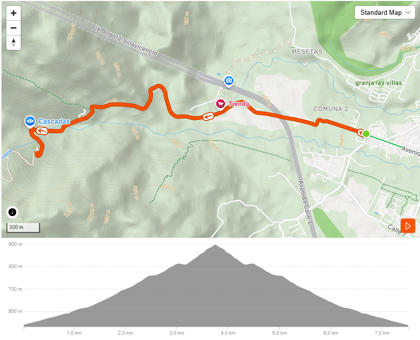
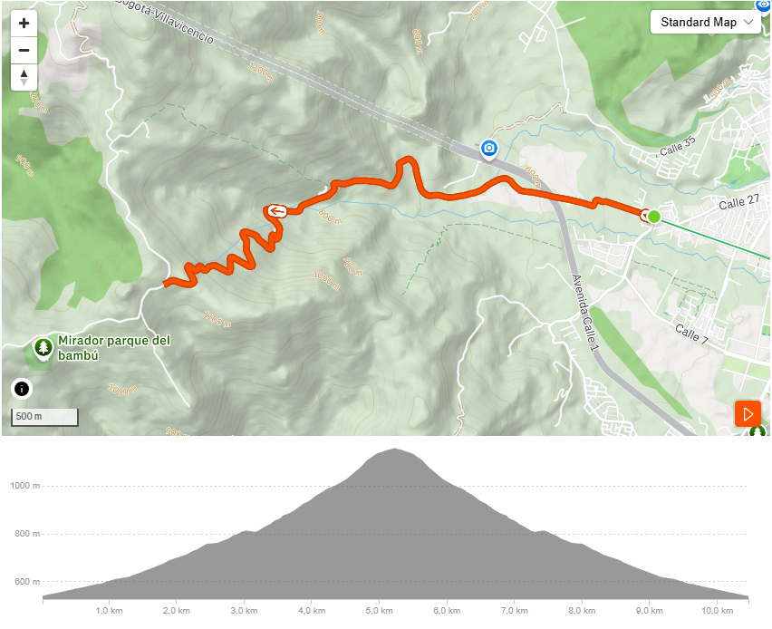
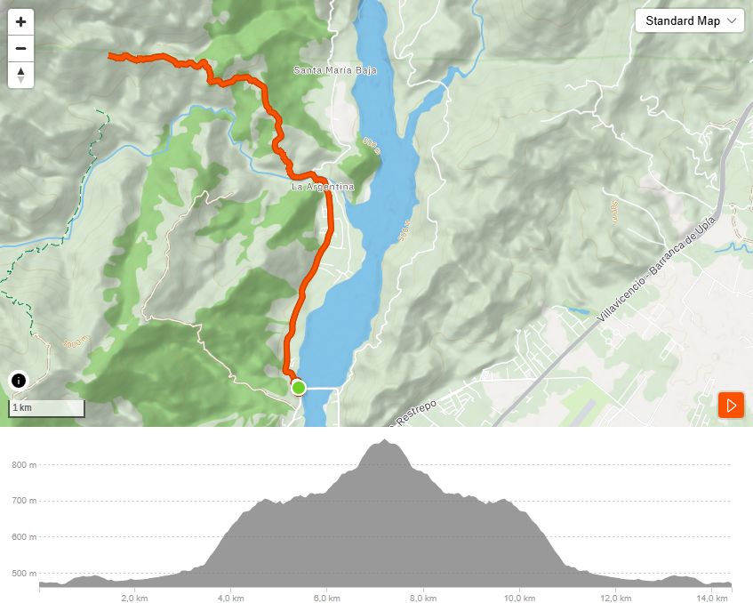
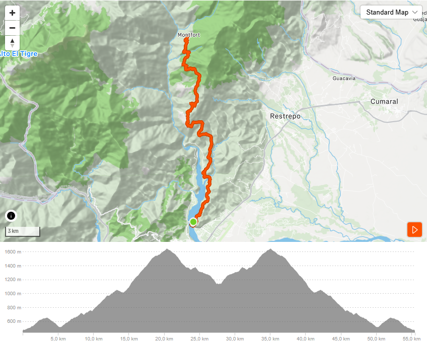

Ruta 1: Vereda El Carmen
Una ruta de dificultad media-alta y técnica que atraviesa Cañón Verde, ideal para disfrutar de la naturaleza.
- Distancia: 7.51 km
- Duración: 48:04 minutos
- Dificultad: Media-alta

Rutas de Mountain Bike
Aquí encontrarás diferentes rutas para practicar Mountain Bike y disfrutar de los paisajes naturales de la región.
Una ruta de dificultad media-alta y técnica que atraviesa Cañón Verde, ideal para disfrutar de la naturaleza.

Una ruta desafiante que te llevará a la cima del cerro para disfrutar de la vista panorámica sobre la ciudad de Villavicencio.

Ruta de dificultad alta y exigente que te llevará a una hermosa cascada, ideal para disfrutar de la naturaleza y refrescarte.

Ruta de dificultad altisisma exigencia física que te llevará a Monfort Meta.
